эллиптические кривые
условие
y² = x³ − x + 2 (mod 29)
- базовая точка
- G = (10; 8)
- секреты
- A — 7, B — 4
Найти точки, которые A и B отправят друг другу, — XA = 7G и YB = 4G, — и общий ключ, который каждый посчитает у себя.
кривая
Кривая — это все точки (x; y), для которых y² = x³ − x + 2. Только считается всё по модулю 29: числа идут по кругу, как часы на 29 делений. Поэтому вместо гладкой линии — 29 точек на сетке и ещё одна, O, «на бесконечности».
Точки умеют складываться. На обычной плоскости через две точки проводят прямую, она задевает кривую в третьей — её отражают, это и есть сумма. Если точку складывают саму с собой, вместо прямой берут касательную: это удвоение. По модулю 29 картинка рассыпается на точки, а формулы остаются те же.
7G — это G, сложенная сама с собой семь раз. Но быстрее удваивать: 2G, 4G, а потом добрать — 7G = 4G + 2G + G.
A умножает чужое YB на свои 7, B умножает XA на свои 4. Обоим выходит 28G — одна и та же точка. А тот, кто подслушал только 7G и 4G, не узнает ни 7, ни 4: по точке трудно понять, сколько раз складывали. Здесь числа игрушечные, в настоящих кривых модуль длиной около 256 бит.
- XA = 7G
- (8; 10)
- YB = 4G
- (21; 22)
- KA = 7 · YB
- (16; 15)
- KB = 4 · XA
- (16; 15)
счёт
кривая не вырождена: 4a³ + 27b² ≡ 17, не ноль
G лежит на кривой: и слева, и справа выходит 6
7G = 4G + 2G + G: два удвоения и два сложения вместо шести сложений подряд
каждое обратное число проверено прямо в строке: 16 · 20 = 320 = 11 · 29 + 1
YB = 4G = (21; 22)
в тетради этой строки нет: 4G уже посчитан в шаге 2
та же схема, что для 7G, только вместо G — точка, которую прислал B
у B проще: 4 · XA — это два удвоения
ключ
KA = KB = (16; 15)
у A и у B вышла одна и та же точка